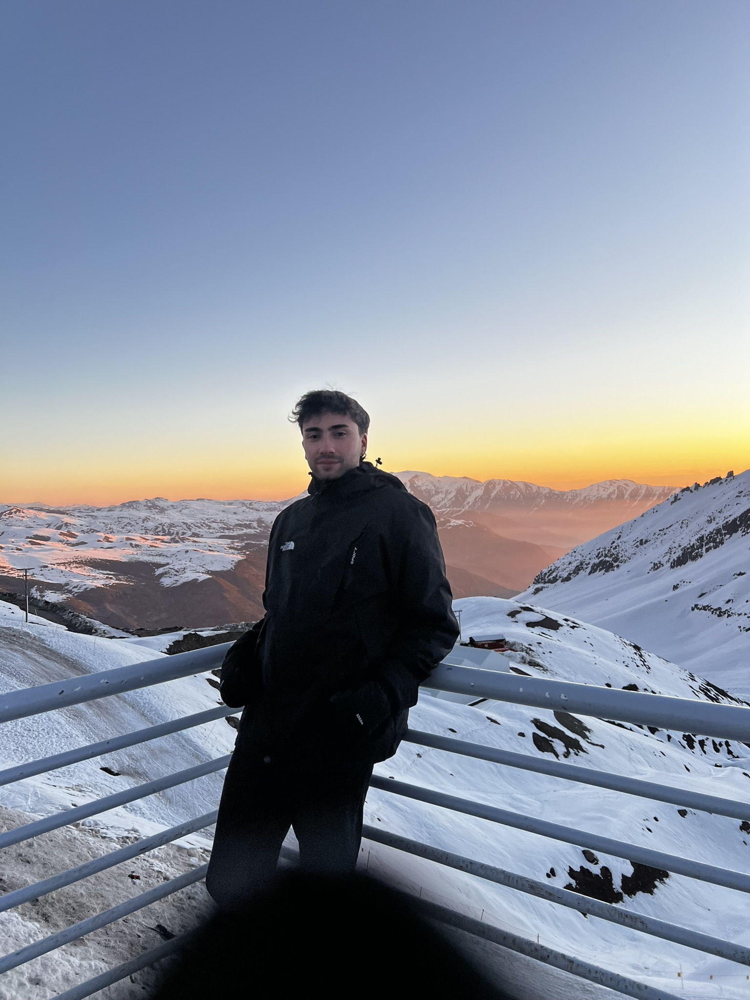

Full Stack Developer & Data Engineer
Welcome to my portfolio! In case you haven't noticed from the vibrant colors and warm atmosphere, I'm Colombian and proud of it. My journey in technology has been as rich and diverse as the landscapes of my beautiful country. With a passion for innovation and problem-solving, I've developed expertise across multiple domains of software engineering.
As a Full Stack Developer, I craft seamless digital experiences from front-end to back-end. I thrive on challenges and embrace new technologies – this adaptability drives me to continuously expand my skill set. I work with modern frameworks, cloud technologies, and database management, always striving to build better solutions that meet diverse business needs. Currently, I'm diving deep into Prompt Engineering and AI integration, exploring how to bridge human creativity with artificial intelligence and develop alongside these rapidly evolving tools.
When I'm not coding or building AI-powered applications, you'll find me discovering coffee shops, exploring new places, or experimenting with new technologies. I believe in continuous learning and staying at the cutting edge of tech innovation. My approach combines creativity and dedication with a friendly, collaborative spirit – bringing both expertise and enthusiasm to every project I undertake.